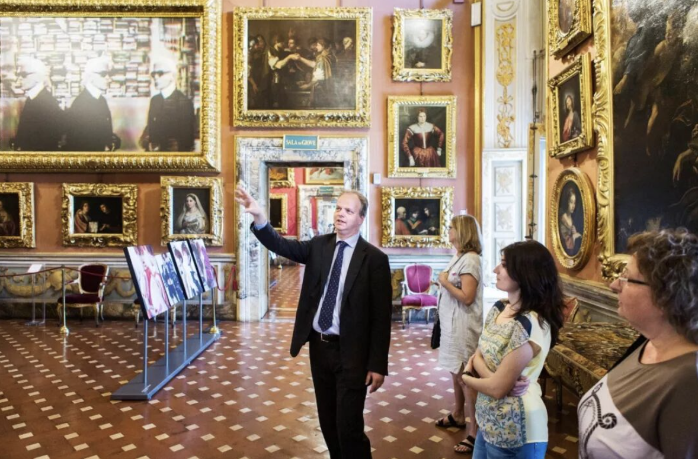

On a closed night inside the Pitti Palace, Eike Schmidt and his colleagues began a long-planned gallery overhaul—moving Raphael’s Doni portraits into Room 41 to “stage a dialogue” with Michelangelo. This interview follows the larger visitor-first reforms behind that gesture: galleries, ticketing, education, conservation, and digital work.

This interview traces how museum reform becomes concrete: gallery reconfiguration (starting from the “worst rooms”), ticketing and anti-scalper measures, extended opening hours, education staffing and school programs, conservation upgrades, and experiments in social media and 3D digitization.
On June 10, it was the first weekend after Uffizi Gallery director Eike Schmidt returned from his visit to China. That night, after the museum closed to the public, he and several colleagues went to the main gallery of the Pitti Palace to begin carrying out a long-planned major reform: relocating two important portraits painted by the Renaissance master Raphael between 1504 and 1505—Agnolo Doni and Maddalena Strozzi—to Room 41 of the Uffizi.
In this newly arranged space—now called the “Raphael and Michelangelo Room”—the two portraits of the Florentine merchant Agnolo Doni and his wife Maddalena Strozzi Doni are placed beside Michelangelo’s Holy Family. “This will be revolutionary, because we are putting two masterpieces together, at the center of the gallery, so that they can enter into dialogue,” Schmidt told The Art Newspaper China in an interview.
To allow visitors to view the diptych panels on the reverse of the Doni portraits, Schmidt and his curatorial team designed a vertical glass display case so viewers can walk around the paintings and see both sides. On the back is a diptych on a theme from Greek mythology, depicting Deucalion—the last survivor who built an ark after the great flood—and his wife Pyrrha. The diptych was completed by an artist in Raphael’s workshop known as the “Master of Serumido,” expressing wishes for the Doni couple’s marital happiness and many children.
Michelangelo’s Holy Family was also commissioned by the Doni couple, created a year after the portraits were completed. It is presumed to have been made to celebrate the birth of their daughter Maria. In the new gallery, two earlier works by Raphael are also placed alongside the Doni portraits.
“Our galleries contain some of the most famous works in the world. We need to think about how we can adjust their placement, re-position and re-combine them, to stimulate people’s eyes and minds,” Schmidt explained. The “Raphael and Michelangelo Room” is not the only space that has been reconfigured: the Botticelli rooms have already been redesigned, and the Leonardo rooms will be rearranged within the next three weeks; later, works by Caravaggio and Rembrandt will also be shown side by side in another gallery.
“This will offer an international perspective on artistic development and art history. There are many opportunities here to look at works directly—even without reading any wall texts, as people move through the galleries, they can already learn something from art history. The redesign has been carefully considered and repeatedly tested and adjusted based on earlier experience. In the coming months, we will do the same work for the remaining rooms,” Schmidt said.
Located in Florence, the birthplace of the Renaissance, the Uffizi was begun in 1560 as the offices of Cosimo I de’ Medici, the first Grand Duke of Tuscany, and was completed in 1581. Holding extensive Medici collections of prints, paintings, and sculpture, it officially opened to the public in 1756 and is among the best-known museums in the world. Yet since entering the twentieth century, it has long been criticized for an outdated and inefficient ticketing system, summer queues that can be unbearable, and poor internal facilities and visitor experience.
In November 2015, Schmidt—born in Freiburg, Germany—took over the museum amid controversy, becoming the first non-Italian director in the Uffizi’s more than four-hundred-year history. His appointment was part of an Italian Ministry of Culture reform of museums and cultural heritage: in August 2015, then-minister Dario Franceschini announced 20 new directors, seven of them non-Italian, aimed at reforming bureaucracy and outdated systems within Italy’s cultural institutions. Schmidt was among the most closely watched appointments.
Schmidt is an internationally known art historian and curator specializing in sculpture. He served as a curator at the National Gallery of Art in Washington, D.C. From 2001 to 2006 he moved to Los Angeles to become curator of sculpture and decorative arts at the J. Paul Getty Museum; he then worked briefly at Sotheby’s in London. From 2009 to 2015, he was curator and head of the department of decorative arts, textiles, and sculpture at the Minneapolis Institute of Art.
Despite his extensive museum experience, Schmidt encountered difficulties immediately after taking office. In spring 2016, he set up loudspeakers outside Italy’s most-visited museum to warn tourists waiting in line about scalpers and pickpockets. A few days later, three local police officers came to his office and fined him 329 dollars for broadcasting without authorization. The incident won him public sympathy, but did not stop his reform efforts.
By now, more than three years have passed since Schmidt took office. On September 1 of the previous year, Austrian culture minister Thomas Drozda announced at a press conference that the German-born sculpture specialist would, after stepping down at the end of 2019, take up the directorship of Vienna’s Kunsthistorisches Museum. During Schmidt’s visit to China, The Art Newspaper China interviewed him about the reforms he has pursued as a historically significant foreign director at the Uffizi.